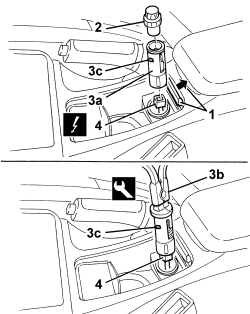
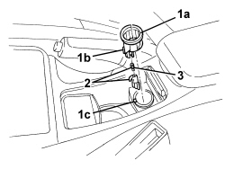

7065C72 FRONT CIGAR LIGHTER SOCKET - R.R.
- Path
- Procedures > 70 FITTINGS > 7065 SAFETY BELTS AND ACCESSORIES > 7065C ACCESSORIES AND DECORATIONS > 7065C72 FRONT CIGAR LIGHTER SOCKET - R.R.
- Kind
- repair procedure (removal / refitting; the operation number is the code)
- Applies to
- all engines; all production periods
- Interactive page
- https://sloeber94.github.io/elrnDB/alfa/159/en/#/939004939
Applies to: all engines; all production periods
 Removing
Removing
 Refitting
Refitting1. Open the cover.
2. Remove the cigar lighter.
3. Slightly remove the cigar lighter seat (3a) using tool (3b).
Tool | Description | Function | Validity |
|---|---|---|---|
1876044000 | Caliper | Extracting cigar lighter housing |
4. Disconnect the electrical connection.
Description | Component |
|---|---|
CIGAR LIGHTER/CURRENT SOCKET |

Applies to: all engines; all production periods
1. If necessary, remove ring nut (1a) by undoing retainer (1b) from seat (1c).
2. Extract the bulb holder and bulb.
3. Remove the bulb from the bulb holder (press-fitted).

Applies to: all engines; all production periods
Refitting
Removing- Check that the cigar lighter seat, the bulb and the bulb holder are not damaged.
- Refit the bulb and the bulb holder.
- Position the locknut and attach the retainer in its seat.
- Connect the electrical connection.
- Fit the cigar lighter seat.
- Check that the current socket is working.
- Fit the cigar lighter.
- Close the cover.